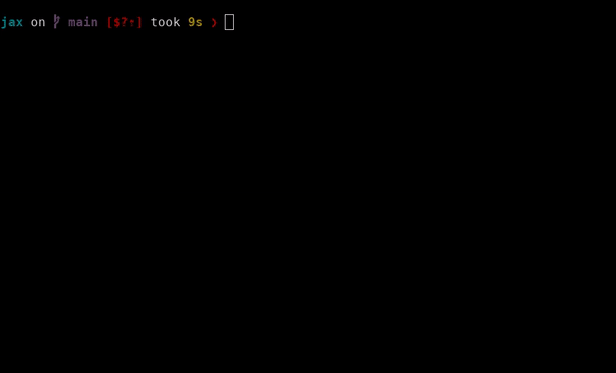

Compiled prints and breakpoints#
The jax.debug package offers some useful tools for inspecting values
inside of compiled functions.
Debugging with jax.debug.print and other debugging callbacks#
Summary: Use jax.debug.print() to print traced array values to
stdout in compiled (e.g. jax.jit or jax.pmap-decorated) functions:
import jax
import jax.numpy as jnp
@jax.jit
def f(x):
jax.debug.print("ü§Ø {x} ü§Ø", x=x)
y = jnp.sin(x)
jax.debug.print("ü§Ø {y} ü§Ø", y=y)
return y
f(2.)
# Prints:
# ü§Ø 2.0 ü§Ø
# ü§Ø 0.9092974662780762 ü§Ø
With some transformations, like jax.grad and jax.vmap, you can use Python’s builtin print function to print out numerical values. But print won’t work with jax.jit or jax.pmap because those transformations delay numerical evaluation. So use jax.debug.print instead!
Semantically, jax.debug.print is roughly equivalent to the following Python function
def debug.print(fmt: str, *args: PyTree[Array], **kwargs: PyTree[Array]) -> None:
print(fmt.format(*args, **kwargs))
except that it can be staged out and transformed by JAX. See the API reference for more details.
Note that fmt cannot be an f-string because f-strings are formatted immediately, whereas for jax.debug.print, we’d like to delay formatting until later.
When to use “debug” print?#
You should use jax.debug.print for dynamic (i.e. traced) array values within JAX transformations
like jit, vmap, and others.
For printing of static values (like array shapes or dtypes), you can use a normal Python print statement.
Why “debug” print?#
In the name of debugging, jax.debug.print can reveal information about how computations are evaluated:
xs = jnp.arange(3.)
def f(x):
jax.debug.print("x: {}", x)
y = jnp.sin(x)
jax.debug.print("y: {}", y)
return y
jax.vmap(f)(xs)
# Prints: x: 0.0
# x: 1.0
# x: 2.0
# y: 0.0
# y: 0.841471
# y: 0.9092974
jax.lax.map(f, xs)
# Prints: x: 0.0
# y: 0.0
# x: 1.0
# y: 0.841471
# x: 2.0
# y: 0.9092974
Notice that the printed results are in different orders!
By revealing these inner-workings, the output of jax.debug.print doesn’t respect JAX’s usual semantics guarantees, like that jax.vmap(f)(xs) and jax.lax.map(f, xs) compute the same thing (in different ways). Yet these evaluation order details are exactly what we might want to see when debugging!
So use jax.debug.print for debugging, and not when semantics guarantees are important.
More examples of jax.debug.print#
In addition to the above examples using jit and vmap, here are a few more to have in mind.
Printing under jax.pmap#
When jax.pmap-ed, jax.debug.prints might be reordered!
xs = jnp.arange(2.)
def f(x):
jax.debug.print("x: {}", x)
return x
jax.pmap(f)(xs)
# Prints: x: 0.0
# x: 1.0
# OR
# Prints: x: 1.0
# x: 0.0
Printing under jax.grad#
Under a jax.grad, jax.debug.prints will only print on the forward pass:
def f(x):
jax.debug.print("x: {}", x)
return x * 2.
jax.grad(f)(1.)
# Prints: x: 1.0
This behavior is similar to how Python’s builtin print works under a jax.grad. But by using jax.debug.print here, the behavior is the same even if the caller applies a jax.jit.
To print on the backward pass, just use a jax.custom_vjp:
@jax.custom_vjp
def print_grad(x):
return x
def print_grad_fwd(x):
return x, None
def print_grad_bwd(_, x_grad):
jax.debug.print("x_grad: {}", x_grad)
return (x_grad,)
print_grad.defvjp(print_grad_fwd, print_grad_bwd)
def f(x):
x = print_grad(x)
return x * 2.
jax.grad(f)(1.)
# Prints: x_grad: 2.0
Printing in other transformations#
jax.debug.print also works in other transformations like pjit.
More control with jax.debug.callback#
In fact, jax.debug.print is a thin convenience wrapper around jax.debug.callback, which can be used directly for greater control over string formatting, or even the kind of output.
Semantically, jax.debug.callback is roughly equivalent to the following Python function
def callback(fun: Callable, *args: PyTree[Array], **kwargs: PyTree[Array]) -> None:
fun(*args, **kwargs)
return None
As with jax.debug.print, these callbacks should only be used for debugging output, like printing or plotting. Printing and plotting are pretty harmless, but if you use it for anything else its behavior might surprise you under transformations. For example, it’s not safe to use jax.debug.callback for timing operations, since callbacks might be reordered and asynchronous (see below).
Strengths and limitations of jax.debug.print#
Strengths#
Print debugging is simple and intuitive
jax.debug.callbackcan be used for other innocuous side-effects
Limitations#
Adding print statements is a manual process
Can have performance impacts
Interactive inspection with jax.debug.breakpoint()#
Summary: Use jax.debug.breakpoint() to pause the execution of your JAX program to inspect values:
@jax.jit
def f(x):
y, z = jnp.sin(x), jnp.cos(x)
jax.debug.breakpoint()
return y * z
f(2.) # ==> Pauses during execution!

jax.debug.breakpoint() is actually just an application of jax.debug.callback(...) that captures information about the call stack. It has the same transformation behaviors as jax.debug.print as a result (e.g. vmap-ing jax.debug.breakpoint() unrolls it across the mapped axis).
Usage#
Calling jax.debug.breakpoint() in a compiled JAX function will pause your program when it hits the breakpoint. You’ll be presented with a pdb-like prompt that allows you to inspect the values in the call stack. Unlike pdb, you will not be able to step through the execution, but you are allowed to resume it.
Debugger commands:
help- prints out available commandsp- evaluates an expression and prints its resultpp- evaluates an expression and pretty-prints its resultu(p)- go up a stack framed(own)- go down a stack framew(here)/bt- print out a backtracel(ist)- print out code contextc(ont(inue))- resumes the execution of the programq(uit)/exit- exits the program (does not work on TPU)
Examples#
Usage with jax.lax.cond#
When combined with jax.lax.cond, the debugger can become a useful tool for detecting nans or infs.
def breakpoint_if_nonfinite(x):
is_finite = jnp.isfinite(x).all()
def true_fn(x):
pass
def false_fn(x):
jax.debug.breakpoint()
lax.cond(is_finite, true_fn, false_fn, x)
@jax.jit
def f(x, y):
z = x / y
breakpoint_if_nonfinite(z)
return z
f(2., 0.) # ==> Pauses during execution!
Sharp bits#
Because jax.debug.breakpoint is a just an application of jax.debug.callback, it has the same sharp bits as jax.debug.print, with a few more caveats:
jax.debug.breakpointmaterializes even more intermediates thanjax.debug.printbecause it forces materialization of all values in the call stackjax.debug.breakpointhas more runtime overhead than ajax.debug.printbecause it has to potentially copy all the intermediate values in a JAX program from device to host.
Strengths and limitations of jax.debug.breakpoint()#
Strengths#
Simple, intuitive and (somewhat) standard
Can inspect many values at the same time, up and down the call stack
Limitations#
Need to potentially use many breakpoints to pinpoint the source of an error
Materializes many intermediates